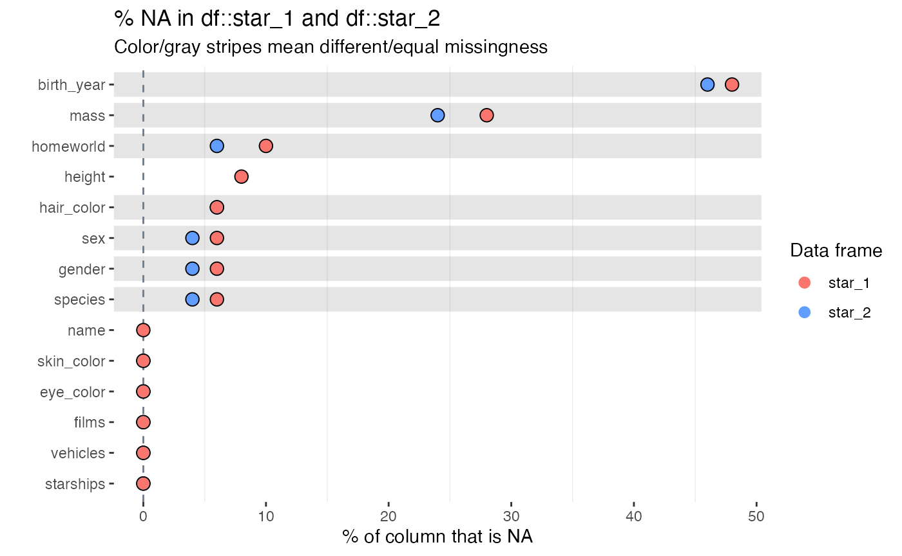

inspect_na_examples.Rmdstarwars
The examples below make use of the starwars and storms data from the dplyr package
For illustrating comparisons of dataframes, use the starwars data and produce two new dataframes star_1 and star_2 that randomly sample the rows of the original and drop a couple of columns.
inspect_na() for a single dataframeinspect_na() summarises the prevalence of missing values by each column in a data frame. A tibble containing the count (cnt) and the overall percentage (pcnt) of missing values is returned.
## # A tibble: 13 x 3
## col_name cnt pcnt
## <chr> <int> <dbl>
## 1 birth_year 44 50.6
## 2 mass 28 32.2
## 3 homeworld 10 11.5
## 4 height 6 6.90
## 5 hair_color 5 5.75
## 6 species 5 5.75
## 7 gender 3 3.45
## 8 name 0 0
## 9 skin_color 0 0
## 10 eye_color 0 0
## 11 films 0 0
## 12 vehicles 0 0
## 13 starships 0 0A barplot can be produced by passing the result to show_plot():
inspect_na() for two dataframesWhen a second dataframe is provided, inspect_na() returns a tibble containing counts and percentage missingness by column, with summaries for the first and second data frames are show in columns with names appended with _1 and _2, respectively. In addition, a \(p\)-value is calculated which provides a measure of evidence of whether the difference in missing values is significantly different.
## # A tibble: 13 x 6
## col_name cnt_1 pcnt_1 cnt_2 pcnt_2 p_value
## <chr> <int> <dbl> <int> <dbl> <dbl>
## 1 birth_year 23 46 25 50 0.841
## 2 mass 15 30 13 26 0.824
## 3 homeworld 6 12 6 12 1
## 4 hair_color 5 10 2 4 0.433
## 5 height 3 6 NA NA NA
## 6 gender 3 6 2 4 1.000
## 7 species 3 6 3 6 1
## 8 name 0 0 NA NA NA
## 9 skin_color 0 0 0 0 NA
## 10 eye_color 0 0 0 0 NA
## 11 films 0 0 0 0 NA
## 12 vehicles 0 0 0 0 NA
## 13 starships 0 0 0 0 NA
Notes:
height appears in star_1 but nor star_2, then the corresponding pcnt_, cnt_ and p_value columns will contain NA
p_value is NA.p_value cannot be calculated, no coloured bar is shown.alpha argument to inspect_na(). The default is alpha = 0.05.